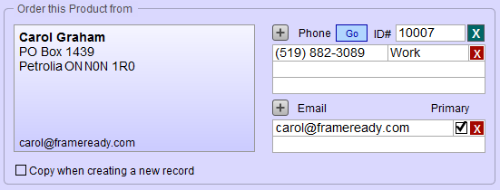

Pricing Tab
Pricing & Inventory Group
Tax1 Exempt, Tax2 Exempt Checkboxes
-
A checkmark in the checkbox indicates the item is exempt from tax when added to an Invoice.
The Wholesale Fields Explained

Item Wholesale Field
-
Wholesale cost is the amount you have paid for the item.
-
If it is a consigned piece, then the amount is the dollar value paid to the artist when it is sold.
-
A report can be printed to calculate consignee payments.
-
It is not mandatory to have an amount in this field but it is recommended (otherwise your inventory value will be incorrect).
Markup Field
-
Markup field automatically calculates a Retail price based on the Wholesale cost.
-
Leave blank if you wish to enter your own Retail price.
WO Field
-
An amount cannot be manually typed in this field unless there is a related Work Order. The pre-entered amount can be modified.
-
The Wholesale Cost is automatically entered when a product item is framed and updated.
-
Use the Wholesale Value Calc sidebar button to adjust the % used to calculate the wholesale cost of the Work Order.
Total Field
-
Total Wholesale Cost is a calculated field and cannot be modified; however, you can do a Find in this field.
-
The amount is calculated as:
-
The wholesale cost of the item PLUS the wholesale cost of the Work Order (if applicable) MULTIPLIED by the yellow quantity Qty On Hand field.
-
The Retail Fields Explained

Item Field
-
Item is the retail price charged for the product.
-
If there is a Markup entered, then the retail price is the Wholesale Cost multiplied by the Markup. If you do not want the retail price to be controlled by a markup, then blank out the Markup field and enter the retail price.
WO Field
-
WO only applies to Artwork in the Products file which was imported into the Work Order file and then updated to a “Framed” item and returned to the Products file using the Convert/Update side bar button in the Work Order file.
-
The field displays the retail price of the Work Order used to frame the artwork. This dollar value is added to the cost of the artwork to obtain a new value (Retail$) for the framed piece now on gallery display. The related Work Order number appears in Related WO Field.
Retail Field
-
Retail field is the sum of the Item field and the WO field (if applicable) and cannot be modified manually.
Discount Field
-
Discount field is entered as a percentage (e.g. .20 will appear as 20%) and used to discount a sale item. The Sale field displays the new total. The Retail, Discount and Sale values all appear on the Invoice. Retail items can also be discounted directly on the invoice.
Sale Field
-
Sale is a calculated field and cannot by modified manually.
-
The value is calculated by Retail minus Discount. If the item has been discounted, then the Sale value shows a different amount than the Retail value. If the Discount field is empty, then both Retail and Sale fields show the same amount.
Related WO Field
-
Related WO field displays the number of the Work Order associated with this item.
-
If the item is artwork which has been framed in the Work Order file and updated to a product using the Convert/Update side bar button, then that Work Order number appears in this field.
Go Button
-
Go To Related WO button takes you directly to the Work Order listed in the Related WO field. This field is grey when no Work Order number is displayed.
The Inventory Section Explained

Out Field
-
The yellow Out field is the quantity that has been consigned out using the Consignments file (outbound consignments only).
Qty on Hand Field
-
Previously labelled as the IN Field.
-
The Qty on Hand field is the quantity of product available in inventory. (Always displays as a whole number.)
-
Quantities below zero display with a minus sign.
-
The quantity automatically decreases when the product item is entered on an Invoice.
-
Items on an Invoice with Terms of 48 Hour Approval are not removed from inventory. To have the item removed from inventory, go the Invoice and click on Terms. A message appears asking if you want to update the inventory at this time. Click Yes and select a term other than 48 Hour Approval.
-
Items returned on an Invoice are added to the Qty on Hand field of the returned item.
-
For Multi site version – this represents the quantity on hand for all sites.
Reorder Threshold Field
-
Reorder Threshold is used to ensure that the product is always in stock: when the amount in the Qty on Hand field falls below this number, then the amount in the Reorder Qty field is added to the purchase order created for this company. Company must be selected in the Order this Product from group.
Keep on Hand Field
-
Use the Keep on Hand field to ensure inventory quantities are maintained at a fixed level.
-
FrameReady uses the Keep on Hand value to automatically adjust the Reorder Qty field, e.g. if you have 2 items on hand, and a Keep on Hand value of 5, then the Reorder Qty is automatically calculated to be 3.
Reorder Qty Field
-
Reorder Qty is the amount to be reordered.
-
See the box below for the rules governing this field.
-
When Main Menu > Products file > Create Purchase Order is used, then a Purchase Order is created for the supplier assigned to this product.
Minimum Order Field
-
If a supplier requires that you order a minimum number of items, then enter this value into the Minimum Order field. Leave blank if there is no such requirement.
Rules Governing the Reorder Qty Field
1. If the value in Minimum is greater than the difference between Keep on Hand and Qty on Hand, then the Reorder Qty will be the Minimum.
2. If the value in Minimum is less than the difference between Keep on Hand and Qty on Hand, then the Reorder Qty will be the difference between Keep on Hand and Qty on Hand.
3. If there is no value in Minimum, then the Reorder Qty will be the sum Keep on Hand minus Qty on Hand.
4. If there is no value in either Minimum or Keep on Hand, then the Reorder Qty will be whatever is in the field.
5. The Threshold field sets the point at which the Reorder Qty is posted to a PO. Do not use a value of 0 (zero).
6. When the Reorder Qty field is green it means that it is ready to be posted to a PO. The On Order checkbox indicates that the item has been posted to a PO and is waiting to be received (from the PO). While it is checked, the item will not be posted again.
Location Popup Field
-
Location is a drop-down menu to identify where the artwork is located/stored.
-
Use Edit… to modify or add a location to the list.
-
Use Other… to enter a location which you do not want added to the menu.
Tiered Discounts Group

Percentage Fields for Each Tier
-
Enter the discount percentage for each tier. The retail price for that tier displays to the right.
-
Tier label names can be edited, from the Main Menu in the Product's Option tab, by clicking the Tier Discount Headings button. You must be logged in as level3 or level4.
Apply to Found Set
-
First perform a find or click Find All, then use this button to change the found set or all records.
Sales Information Group

Received Field
-
When a new item is entered, the Received date is automatically entered.
-
When the item is entered onto a Purchase Order and accepted into stock, the date will change to show when the last shipment was received.
-
Each time the item sells, the date is entered into the appropriate sold date. (The first time an items sells all three dates are the same; eventually all three dates will be different.)
First Sold Field
-
The date when the item was first sold. If the two dates below it are the same, this indicates that the item has only sold once.
Previously Sold Field
-
The date sold between first and last. If the date is the same as the first, then the item has only sold twice in its history.
Last Sold Field
-
The date when the product was most recently sold on an invoice.
Qty Sold Field
-
The number of items sold since inventory was first entered for this item.
-
When items are returned, the quantity sold is reduced.
-
Multi-site only: If you are on a specific Site tab then all the fields show the information for this site only. The Site # Inventory List View button is also site specific.
Turn Around Box
-
The Turn Around box identifies the number of days between the Previously Sold date and the Last Sold date. This provides a quick way to see which items are selling quickly and which are not.
-
You can use the Find feature to locate all stock which has a shelf life greater than a certain number of days and sort them by Turnaround in a descending order. This provides a listing of slow selling stock, however, you may want to look at the Sold dates and Qty Sold to determine the true selling habits of the item. By using the data available on this screen, you can determine a more accurate picture of the sales history of the item and estimate its sales potential.
-
The calculations in this area track how quickly your products are selling. All fields are available in the search screen and the date fields can be modified in this layout. All fields are available in the search screen.
Other Screen Items
Committed Checkbox
-
Indicates that the product has been added to a Work Order but the Work Order has not yet been posted to an Invoice. This lets you know, at a glance, that the product 'might' be sold.
-
It is best used for single products (where the inventory count is one) so that you do not sell a single item to two customers. The Products file only adjusts inventory when the Work Order is posted to an Invoice.
Export to Excel Button
-
Compiles all Product records (or the found set, if applicable) into an Excel-friendly data format.
Inventory List Button
-
Gives you a way of viewing your data where you can do a physical inventory by entering the actual quantities, print out a report, and then move the actual to the regular quantity fields.
-
Products file records can be viewed in a special Inventory List View as well as the regular list view. See also: Inventory List View.
The "Order This Product From" Section Explained
The Supplier field displays the name of the company from whom the product will be ordered. A supplier must be identified in order to have FrameReady create a Purchase Order to replenish stock when the Threshold is reached.

Copy When Creating a New Record Checkbox
-
This feature is a time saver when entering more than one product for the same supplier: if a check appears in the box, then the supplier’s information is automatically entered on the new record.
ID #
-
All companies and customers listed in the Contacts file have a unique ID# (generated by FrameReady when the record is created.)
Do not remove or change the identification number of any record. If it says Gallery, then it is your own gallery record.
-
The green X Clear button removes the company and its information from the screen but does not delete the data from your database. You should clear the current company before selecting another to replace it.
Name Button
-
Searches the First Name and/or Last Name fields in your Contacts.
-
Only visible when no supplier has been assigned.
Company Button
-
Searches the Company field in your Contacts.
-
Only visible when no supplier has been assigned.
Phone Button
-
Searches the Phone Number field in your Contacts.
-
Only visible when no supplier has been assigned.
New Vendor Button
-
Creates a new Vendor in your Contacts. Unlike the Price Codes file, the Account Number field is optional for Product vendors. However, it is also recommended that you identify them as a supplier in Keywords tab. Suppliers can then be omitted or selected for promotional mailing.
-
FrameReady searches your contacts to make sure it has not already been entered.
-
Only visible when no supplier has been assigned.
Acc't #
-
Account # – Only companies in your Contacts file with an entry in the Account # field will appear in the pop-up menu of suppliers. If you do not have an account number with the company, type in any number, letters or Pending into the field to have it appear on the menu.
-
Only visible when a supplier has been assigned.
GO Button
-
Only visible when a supplier has been assigned.
-
Click the GO button to view the related Contact record.
-
Use the Contacts icon in the nav bar to go to the last-viewed Contact record.
Phone Fields
-
The Phone fields display the number and type of the supplier’s first three phone numbers. An unlimited amount of phone numbers can be stored in the file.
-
Use the scroll bar to view the other numbers. Use the backspace key to remove unused numbers. Changes can be made in this screen.
-
Only visible when a supplier has been assigned.
Email Fields
-
The Email fields display the supplier’s first two email address. The checkbox indicates the primary email address.
-
An unlimited amount of entries can be stored in the file. Use the scroll bar to view the others. Use the backspace key to remove unused entries. Changes can be made in this screen.
-
Only visible when a supplier has been assigned.
Creation Date Label
-
Automatically displays when the record was created and cannot be modified. It is only displayed on this screen.
Modified Date Label
-
Automatically displays when the record was last modified in any way and cannot be changed manually.
© 2023 Adatasol, Inc.